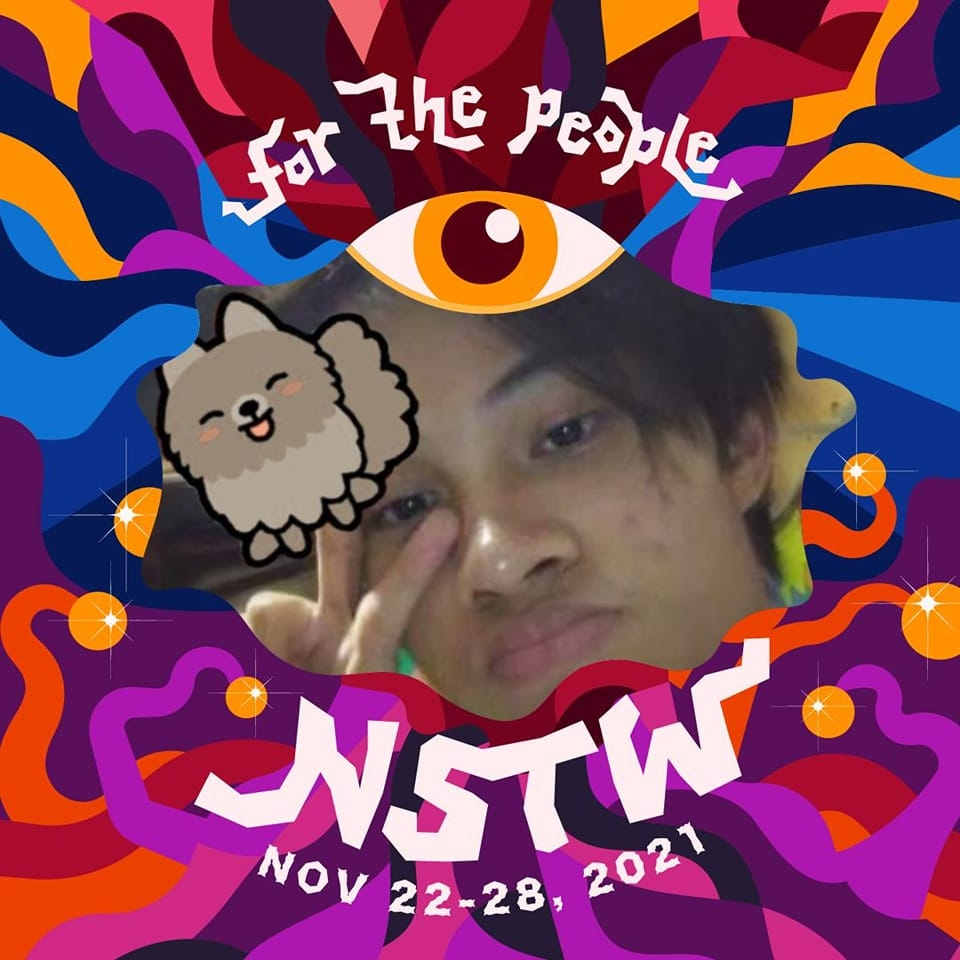

Ang proyektong ito ay isinagawa bilang pang-huling requirement
sa Wika 1.
Sa proyektong ito, binigyang pansin ang mga salitang 'slang' o
balbal na nagsisilbing representasyon ng mga bagong salitang
binubuo ng mga tagapagsalita ng wikang Filipino. Ang mga salitang
ito ay binubuo para sa "convenience" ng mga karaniwang gumagamit ng
wika, para sa kanilang mga karaniwang gawain.
And mga salitang balbal ay representasyon ng pagkamalikhain at
katalinuhan ng mga Pilipino. Higit pa rito, ang dahilan
ng paglitaw nito ay bunga ng iba't ibang pangyayari lalong
lalo na ang pag-unlad ng teknolohiya, at ang malaganap na
impluwensya ng mga media outlet sa ating lipunan.
Tandaan natin na ang mga salitang ito ay hindi lamang
lumitaw nang basta-basta kaya't mahalagang masuri at
maintindihan ang mga nakapaloob na socio-cultural
circumstances dito.
Bilang representasyon ng mga bagong salitang lika
ng mga Pilipino, ang masusing pag-aaral sa mga
salitang balbal ay maaaring magbigay rin ng liwanag
ukol sa pagbabago ng wikang Filipino.
Kilalanin ang mga manunulat
Jehanne Eliza Criseno
BS Computer Science

Benjamin Bañaga
BS Computer Science
❮
❯
WIKA 1 G1 | BENJAMIN BAÑAGA AND JEHANNE CRISENO